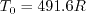
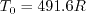
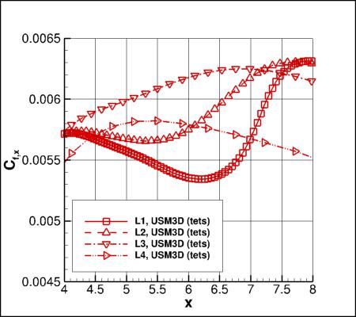

Return to: 3D Hemisphere Cylinder Validation (NEW) for Numerical Analysis Intro Page
Return to: Turbulence Modeling Resource Home Page
TURBULENCE MODEL NUMERICAL ANALYSIS
3D Hemisphere Cylinder Validation (NEW)
SA-neg Model Results
Link to SA-neg equations
Results are shown for the 3D Hemisphere Cylinder Validation (NEW),
for the SA-neg variant of the SA model.
Note that SA-neg is passive to the
original (SA) model in well-resolved flowfields, and hence is expected to yield essentially identical
results as SA for the cases here.
For all results, the farfield value of the Spalart turbulence variable is
 .
In all codes the Prandtl number Pr is taken to be constant at 0.72, and turbulent Prandtl
number Prt is taken to be constant at 0.9.
The dynamic viscosity is computed using
Sutherland's Law (See White, F. M., "Viscous Fluid Flow," McGraw Hill, New York, 1974, p. 28).
In Sutherland's Law, the local value of dynamic viscosity is determined by plugging the local value of temperature
(T) into the following formula:
.
In all codes the Prandtl number Pr is taken to be constant at 0.72, and turbulent Prandtl
number Prt is taken to be constant at 0.9.
The dynamic viscosity is computed using
Sutherland's Law (See White, F. M., "Viscous Fluid Flow," McGraw Hill, New York, 1974, p. 28).
In Sutherland's Law, the local value of dynamic viscosity is determined by plugging the local value of temperature
(T) into the following formula:

where
 ,
, and
,
, and
 .
The same formula can be found online
(with temperature constants given in degrees K and some small conversion differences).
Note that in terms of the reference quantities for this particular case, Sutherland's Law can equivalently be written:
.
The same formula can be found online
(with temperature constants given in degrees K and some small conversion differences).
Note that in terms of the reference quantities for this particular case, Sutherland's Law can equivalently be written:

where
 is the reference dynamic viscosity that corresponds to the freestream in this case, and
freestream
is the reference dynamic viscosity that corresponds to the freestream in this case, and
freestream  is 540R. This latter form may be more convenient for nondimensional codes.
(Specific details regarding an implementation of Sutherland's Law in nondimensional codes can be found in
handwritten notes describing Sutherland's Law in CFL3D and FUN3D.)
is 540R. This latter form may be more convenient for nondimensional codes.
(Specific details regarding an implementation of Sutherland's Law in nondimensional codes can be found in
handwritten notes describing Sutherland's Law in CFL3D and FUN3D.)
The results on this page have been reported in AIAA Paper 2018-1102,
https://doi.org/10.2514/6.2018-1102. Also, many of the other papers from two special
sessions at AIAA SciTech 2018 dealt with this case: see AIAA Papers 2018-1101 through 1104, and AIAA Papers 2018-1566 through 1570.
Grid Convergence Behavior of Forces, Moment, and Maximum Eddy Viscosity
Plots are shown to illustrate grid convergence for the lift, drag,
moment coefficient, and nondimensional maximum eddy viscosity for the hemisphere-cylinder
at several different angles of attack.
The contributions to the drag coefficient due to the viscosity and pressure are also
presented separately.
For forces and moment, results from 4 different codes (on different versions of the grids) appear
to be approaching nearly the same results as the grid is refined
(i.e., as h approaches zero). CFL3D is a structured-grid code, while all others are
unstructured-grid codes.
For eddy viscosity, it is not as clear that all results are approaching the same answer
in all cases; finer grids are likely required.
Recall that all codes were run using SA-neg.
Alpha=0:
Alpha=5:
Alpha=10:
Alpha=15:
Alpha=19:
Results that generated the above plots can be found in the following data
file:
HC_combined_forces_pitchmom_maxmut.dat.
Comparisons of Cp, Cfx, Cftangent, and Offbody Quantities at Alpha=19 on Finest (L1) Grids
Plots are shown to illustrate behavior of various quantities, for alpha=19 deg only.
Comparisons between codes on the finest (L1) grid are made as follows.
Surface Cp and Cfx are shown along the symmetry plane (y=0).
Surface Cp, Cfx, and Cftangent are shown along z=0
(the tangential direction is defined on the hemisphere-cylinder surface as a unit vector tangential
to the surface, normal to the x-direction, and pointing up.)

Surface Cp, Cfx, and Cftangent are shown versus azimuthal angle (phi) in the cross-flow plane corresponding
to x=5. The azimuthal angles phi=0 deg and phi=180 deg correspond to the leeside and windside, respectively
in the symmetry plane (y=0). The azimuthal angle phi=90 deg corresponds to the horizontal plane z=0.
Offbody plots of p, u, v, and w are shown off the upper surface along a vertical line
corresponding to x=5, y=0.21.
Grid Convergence Behavior of of Cp, Cfx, Cftangent, and Offbody Quantities at Alpha=19
Plots are shown to illustrate grid convergence behavior of various quantities for each code, for alpha=19 deg only.
First, surface Cp is plotted near the leeside minimum Cp location (along y=0).
Surface Cp is plotted near the leeside outflow (along y=0).
Surface Cfx is plotted on the leeside near x=6 (along y=0).


Surface Cfx is plotted along x=5.
Surface Cp is plotted near the minimum Cp location along x=5.
Surface Cfx is plotted near the minimum Cp location along x=5.
Offbody plots of p, u, v, and w are shown off the upper surface along a vertical line along x=5, y=0.21.


Results that generated the above plots can be found in data files in the following tarred gzipped directory:
HC_data_alpha19.tar.gz.
Effect of 2nd Order Turbulence Advection at Alpha=19
The effects of 2nd order accuracy for the convection in the SA model are shown below for FUN3D solutions
at alpha=19 deg.
The major difference is seen in the skin friction near x=6. The effects on surface
pressure (shown) and integrated lift and drag (not shown) are less significant.
Results that generated the above plots can be found in the following data files:
HC_A19_Z0_FUN3D_2ndSA.dat,
HC_A19_Y0_FUN3D_2ndSA.dat,
HC_A19_X5_FUN3D_2ndSA.dat.
The forces, moment, and max mu_t are give in the file:
HC_combined_forces_pitchmom_maxmut_aoa19_fun3d_2ndSA.dat.
Sample input files are available for FUN3D and CFL3D:
fun3d.nml_HC_L2MIX,
cfl3d_HCsampleinput_L3.inp.
Return to: 3D Hemisphere Cylinder Validation (NEW) for Numerical Analysis Intro Page
Return to: Turbulence Modeling Resource Home Page
Recent significant updates:
04/17/2019 - added sample input files for FUN3D and CFL3D
06/19/2018 - added FUN3D results using 2nd order turbulence advection at alpha=19 deg
Page Curators: Christopher Rumsey,
Ethan Vogel,
Clark Pederson
Last Updated: 11/10/2021